Prangon Sheikh
টুকটাক ভিডিও ক্রিয়েটর (বাংলায়)
Crafting: Videos, Thumbnails, Memes
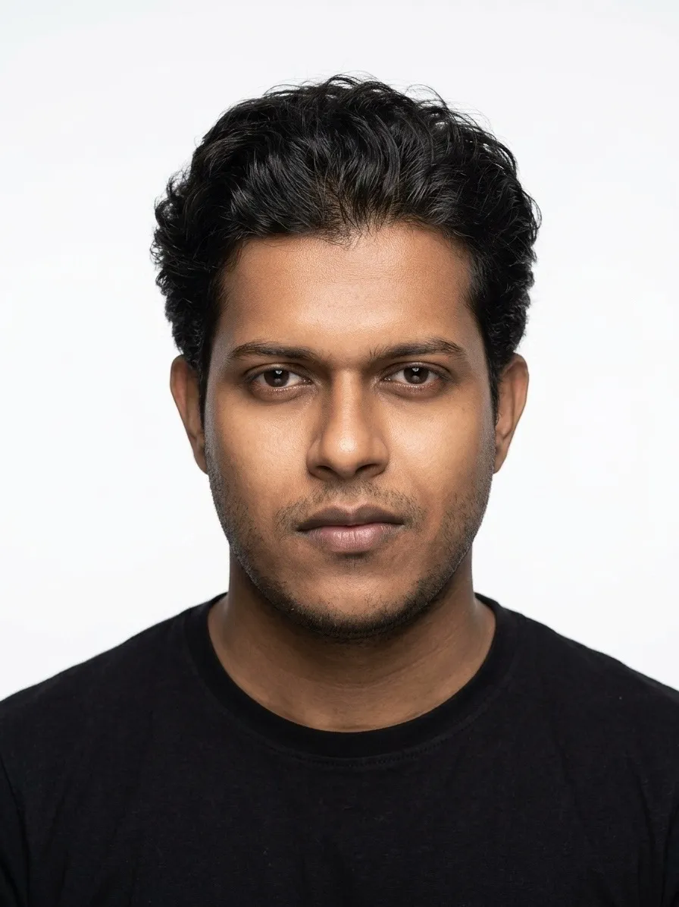
I make videos in Bangla: brand films for a clothing label, one-minute documentaries, thumbnails, and once, a meme page that 62K people now follow.
Most of it is about the Bengal I grew up with. Friday-night natok, Satyajit Ray, carrom on a slow afternoon.
JAARDO
একটি বস্ত্রালয়
Creative direction, content and editing
JAARDO makes hand-embroidered shirts that look back at old Bengal. I shaped how the brand looks, moves and speaks.
The brief. Launch a new label with no history, and make it feel like it has always been there.
The idea. Build a world out of things everyone's grandparents owned: hurricane lanterns, carrom boards, tiffin carriers, lime-washed walls and a hand-painted sign on red brick. Every product sits inside a memory.
What I did
- Creative direction and moodboard for the launch
- Shot direction for the lookbook and campaign films
- Editing, colour grade and pacing for 9:16 and 16:9
- Product motion and fabric-story graphics
- The full Instagram grid, planned post by post
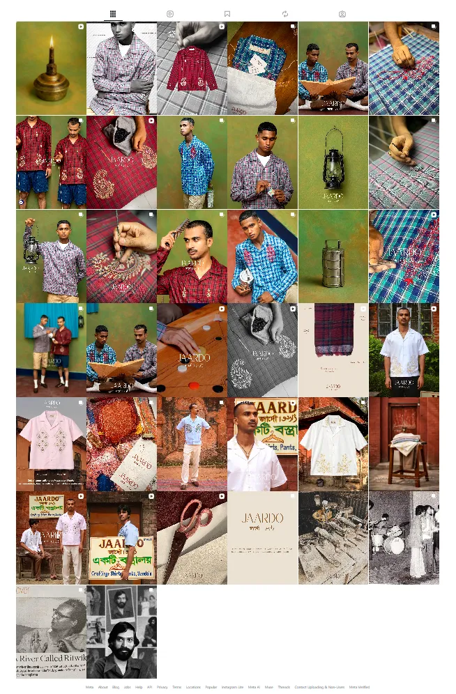
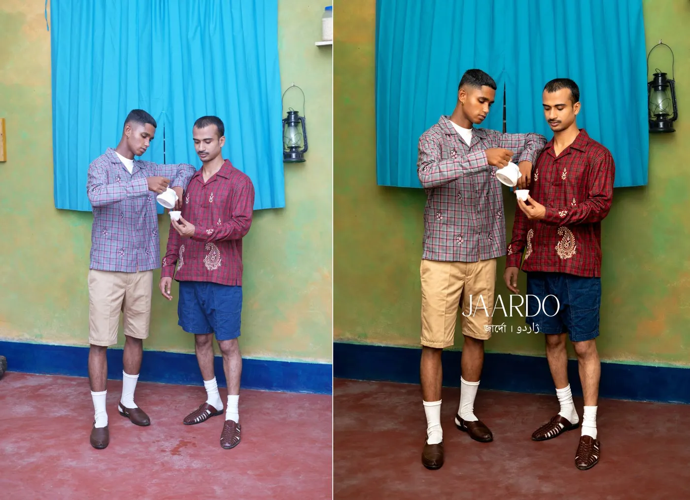
A Minute, Documented
Short documentaries, written and edited by me
Big stories, sixty seconds.
Each episode squeezes a whole career into under a minute. I write the script, cut the archive footage, build the motion graphics and design the thumbnail.
Sound on for this one.
Thumbnails
One face, one idea, Bangla lettering set by hand
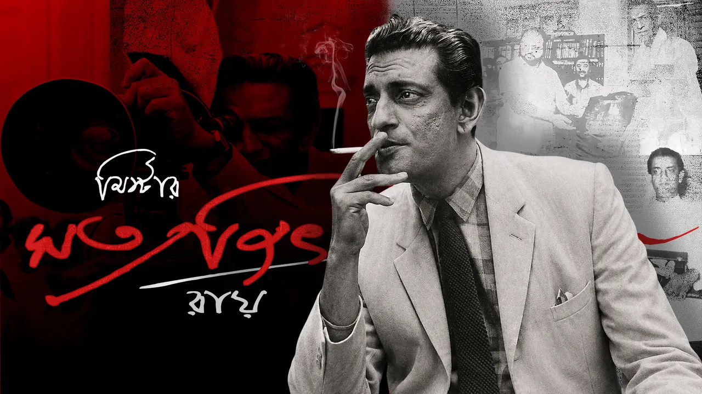
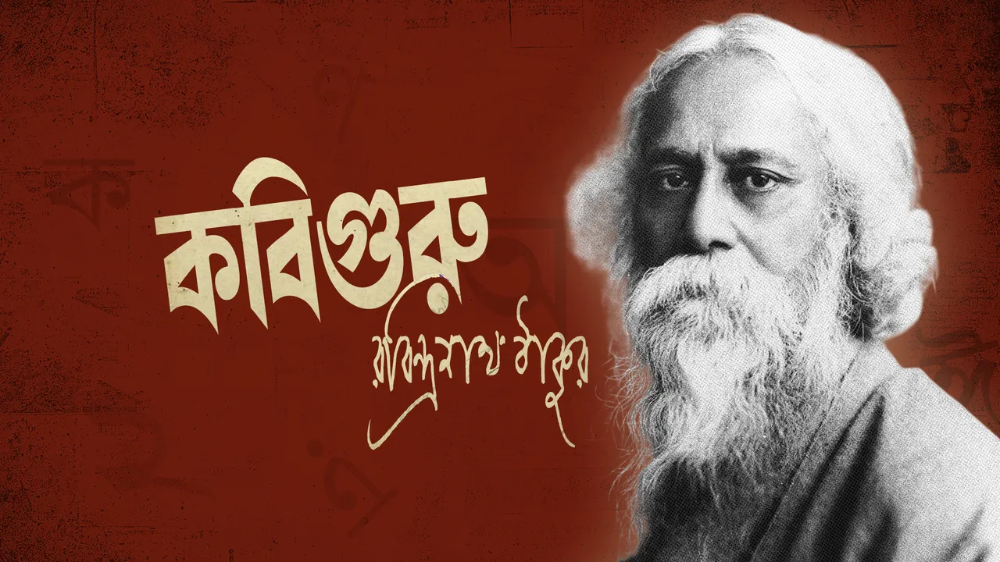
আর্ট-ফার্ট
Illustration, 2018 to 2020. Made entirely with fingers and a phone.
No tablet, no stylus, just a phone screen and a thumb. These started as fun and became the look of my meme page: footballers with crowns, and 90s natok heroes dropped into GTA.
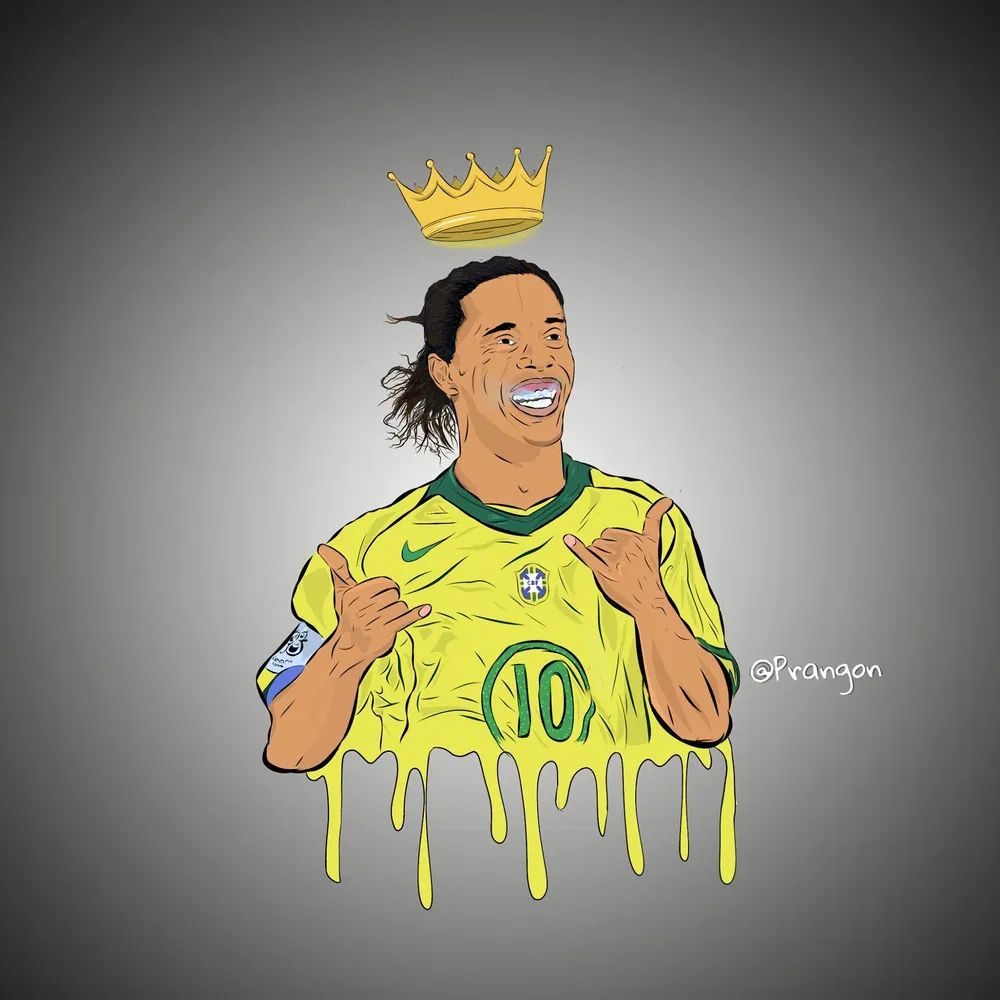
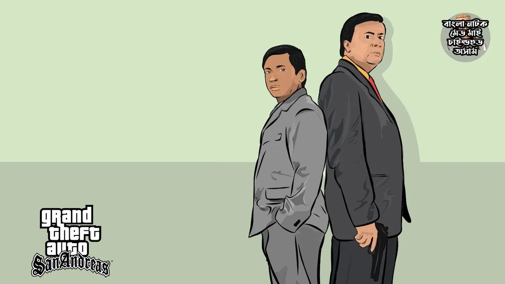
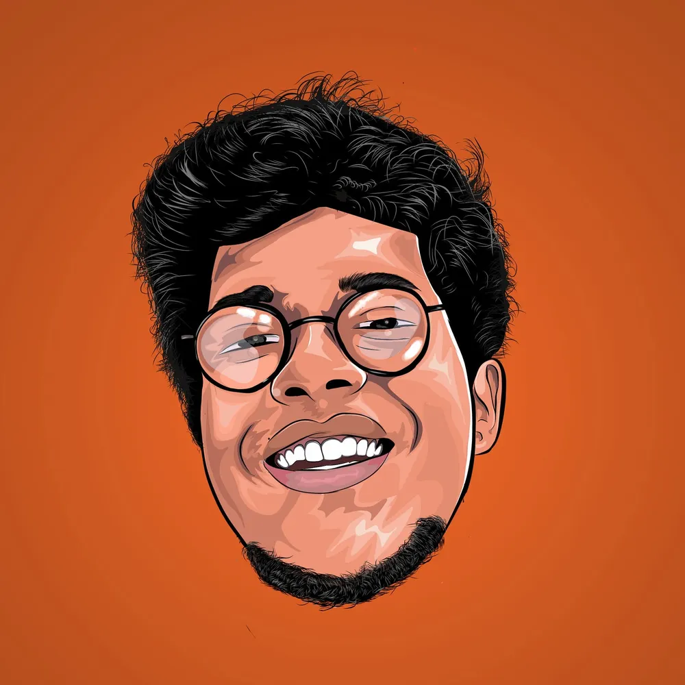
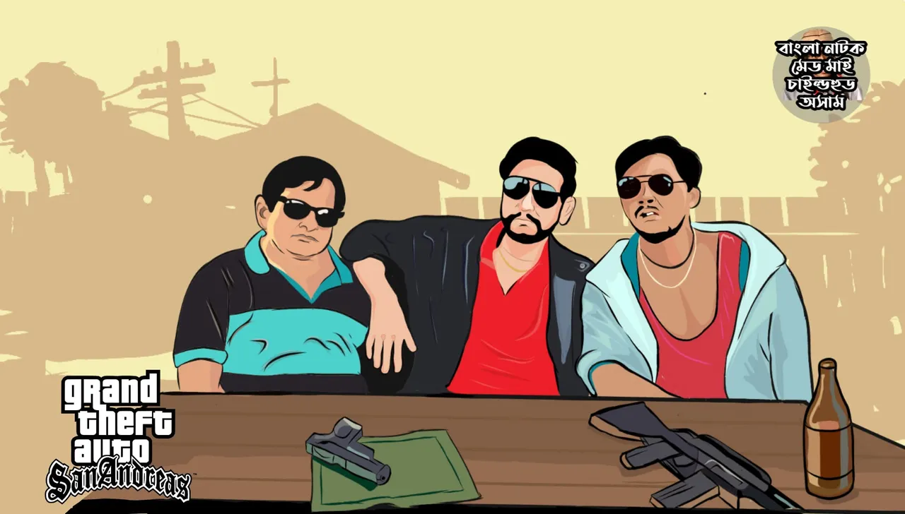
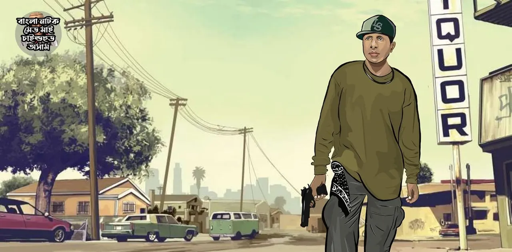
20 days, 30K likes
Community and page growth, 2020
In 2020 I started Bangla Natok made my childhood awesome, a page for everyone who grew up on Friday-night natok.
Original illustrations, GTA-style parodies and quick edits turned a shared memory into posts people wanted to share. The page reached 30K likes in its first 20 days and kept going.
নাটক আমাদের ঐতিহ্য।Natok is our heritage. The page's tagline.
- Likes in the first 20 days
- 30K
- Followers today
- 62K
- Posts
- 154
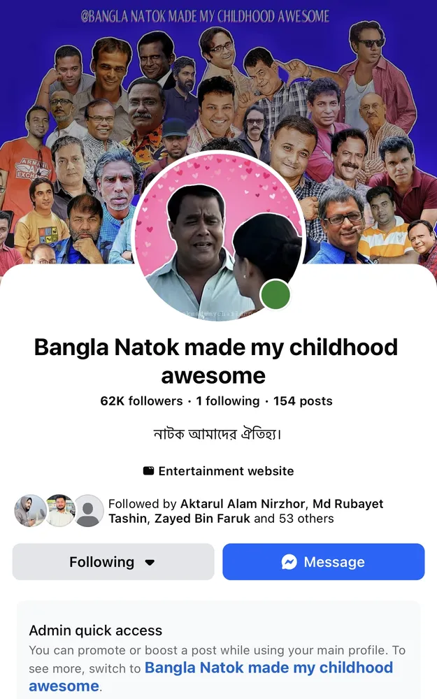
Hi, I'm Prangon.
I grew up on Bangla natok, Satyajit Ray and Saturday football, and that is still what I make work about. I started drawing with my finger on a phone in 2018, built a page that found 62K people who felt the same, and now direct and edit content for brands like JAARDO.
I care about the small things that make a frame feel like home: a lantern in the corner, the curve of a Bangla letter, a cut that lands on the beat.
Have a story you want told in Bangla? Write to me or call.